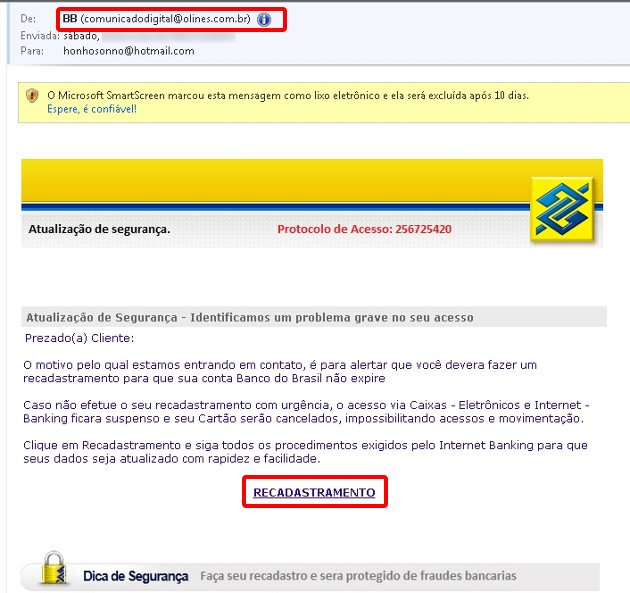

Nós estamos online, clique no canto inferior direito da tela e fale com nosso atendimento. Caso prefira o contato por e-mail, envie uma mensagem, em breve retornaremos.
Obrigado! Sua mensagem foi enviada com sucesso!
Oops! Não foi possível enviar o formulário, revise os campos e tente novamente.
Ransomware: proteja-se dessa praga antes que seja tarde
Blog /
Publicado em
July 3, 2017
Depois do WannaCry, especialistas de segurança da informação apontaram que assistiríamos a uma série de ataques similares, frutas de variações menores do próprio WannaCry. Na semana passada, outro ataque de grande escala veio à tona, por outro ransomware: Petya. O que foi surpreendente nesse caso foi que o ataque tomou dimensões muito maiores que o esperado. Mas por que isso aconteceu nessa escala? Vamos entender isso, explicando sobre o que é um ransomware, porque estes últimos tomaram tal escala, como eles agem e como se proteger contra essas pragas.
Os malwares sempre ficam mais modernos
Malware não é exatamente um termo novo. O nome vem de duas palavras do inglês: "mal", malicious, e "ware", software. Como o próprio nome sugere, trata-se de toda a classe de softwares maliciosos, que compreendem vírus, Trojans, spywares, dentre outros. Os especialistas de segurança classificam os malwares de acordo com a vulnerabilidade dos sistemas que eles exploram, os alvos que eles têm e também o modo como eles operam dentro dos sistemas. A medida que o tempo passa, os malwares precisam ficar cada vez mais sofisticados para que consigam infectar mais sistemas e com isso fazer mais vítimas. Algumas vezes, são os vetores de ataque que são explorados de maneiras novas (falaremos mais sobre isso adiante). Atualmente, notamos também que eles juntam características de dois ou mais tipos de malware em um único código. Esse é o caso do WannaCry e do Petya.
Como age um ransomware
O WannaCry e o Petya são, ao mesmo tempo, ransomwares e worms. Um ransomware é um tipo de malware, especializado em fazer o sequestro de dados dos sistemas que infectam. Uma vez em uma máquina, o ransomware irá bloquear o acesso a arquivos ou ao sistema inteiro. Os lockers ransomwares fazem bloqueio ao acesso do sistema do computador, porém sem realizar a criptografia dos dados. Já os crypto ransomwares, como o nome sugere, realizam a criptografia dos arquivos e do armazenamento do computador. São bem mais graves que os lockers, já que a criptografia aplicada é praticamente impossível de ser quebrada. É nessa categoria que o WannaCry e o Petya estão inseridos. O que faz com que o WannaCry e o Petya sejam classificados também como worms é o modo como realizam a propagação. Ambos se aproveitam de vulnerabilidades na rede e nos sistemas para fazer sua auto replicação, infectando um grande número de máquinas em pouco tempo. No caso dos dois, a falha explorada é conhecida como EternalBlue, que foi explorada pela NSA, a agência de segurança nacional dos Estados Unidos. Como é uma falha na rede, a velocidade de propagação é muito grande. Essa característica foi fundamental para que os ataques tomassem as proporções que tiveram.
O ínicio da ameaça
A infecção desse tipo de malware pode acontecer de diversas maneiras. No caso do WannaCry e do Petya, é muito provável que o vetor inicial tenha sido um phishing por e-mail. O phishing nada mais é que alguma página da internet ou e-mail falsos. Normalmente os phishings são cópias quase idênticas e estão em páginas que solicitam dados aos usuários. No caso de um e-mail de phishing, normalmente eles não solicitam dados. Basta a abertura do e-mail para que eles causem a infecção. Apesar disso, reconhecer uma página de phishing é relativamente fácil. Normalmente, a URL da página é muito diferente do normal, ou detalhes da página podem ser grosseiramente errados. O mesmo vale para e-mails. Veja o exemplo:

Aqui dois detalhes podem ser facilmente notados:
Bancos nunca solicitam seus dados por e-mail;
O endereço do e-mail não tem relação com o Banco do Brasil (@olines.com.br);
O phishing pode ter um apelo diferenciado. No exemplo acima, temos um e-mail genérico. Existem também os e-mails de ataques direcionados, normalmente para uma pessoa ou grupo. Esse tipo de phishing possui um escopo mais racional, menos apelativo que os de ataque amplo.
Existem ainda diversos outros vetores de ataque: sites e páginas invadidas, arquivos e programas infectados, dispositivos conectados (como pendrives, smartphones e computadores pessoais), dentre outros. Você pode saber mais sobre vetores de ataque clicando aqui.
O objetivo dos ransomwares
Em geral, o objetivo de um ransomware é fazer com que as vítimas paguem para os criadores do malware um resgate, com a promessa de que terão acesso novamente aos arquivos que foram bloqueados. Aqui no Brasil, tal prática é considerada também um crime cibernético. O pagamento é normalmente exigido em Bitcoin. Os criminosos pedem essa moeda para o resgate por vários motivos. O Bitcoin é uma moeda puramente digital, e que não possui nenhum governo fazendo regulamentação nela. Essa característica dificulta muito o rastreamento por parte de autoridades de qualquer país. Além disso, devido o seu algoritmo (conhecido como Blockchain), o número de Bitcoins que podem ser gerados é finito, o que faz com que a moeda tenha uma grande valorização. Para se ter uma ideia, na data desta publicação, um único Bitcoin vale cerca de US$ 2.541,90. Para se ter ideia, esse valor é mais que o dobro de uma onça de ouro.
E como se proteger?
A esta altura você deve estar achando que usar um computador é perigo certo. Mas não se trata disso, na verdade. O bom uso dos sistemas que possuímos é suficiente para não sermos atingidos por essas pragas. Algumas dessas proteções já são bem conhecidas, mas não custa nada ressaltá-las:
Backups: como dizem, quem tem um backup não tem nenhum. Cópias de segurança dos sistemas são fundamentais para a continuidade das operações do seu negócio, independente do seu ramo de atuação. Podem ser executados diversos tipos de bakcups, como os de configurações, pontos de recuperação, backups off-site (em locais distantes) e backups na nuvem;
Pessoas: são conhecidamente o elemento mais fraco de qualquer sistema, quando falamos de segurança da informação. Esquemas para enganar os usuários, e práticas de engenharia social estão sempre sendo usadas por criminosos digitais. Políticas de segurança, cartilhas de segurança e diversas campanhas de educação e conscientização dos usuários são as ações possíveis para minimizar os riscos envolvidos;
Firewall: Independente da infraestrutura estar disposta localmente ou na nuvem, o uso de soluções de firewall é fundamental para a proteção da rede. Soluções de firewall modernas, que permitam o conhecimento e controle de aplicações da rede, o controle de acesso por usuários e grupos, bloqueio de de tráfego de aplicações desconhecidas e inspeção de tráfego criptografado estão hoje disponíveis para ajudar com esses problemas ;
Proteção endpoint: software de antivírus moderno, que funcione sem a necessidade de assinaturas (vacinas) e permita gerir vulnerabilidades, com baselines de segurança.
Software de SIEM (Security Information and Event Management): da mesma forma que soluções voltadas para o gerenciamento de ativos de rede e de datacenter, podemos gerenciar todos os eventos de segurança no ambiente de rede.
A Trust Control pode ajudar você a ter acesso às melhores proteções. Possuímos parceria com os líderes mundiais de segurança da informação, permitindo à sua empresa ter as proteções da próxima geração. Entre em contato conosco para saber mais e garantir a segurança digital da sua organização.
Prazer, somos a Lanlink
A Lanlink possui entre seus clientes algumas das maiores empresas públicas e privadas do Brasil.
Temos como característica desenvolver relacionamentos de longo prazo, com recorrência de projetos e casos de sucesso implementados em nossos clientes.


.jpg)

 1.svg)